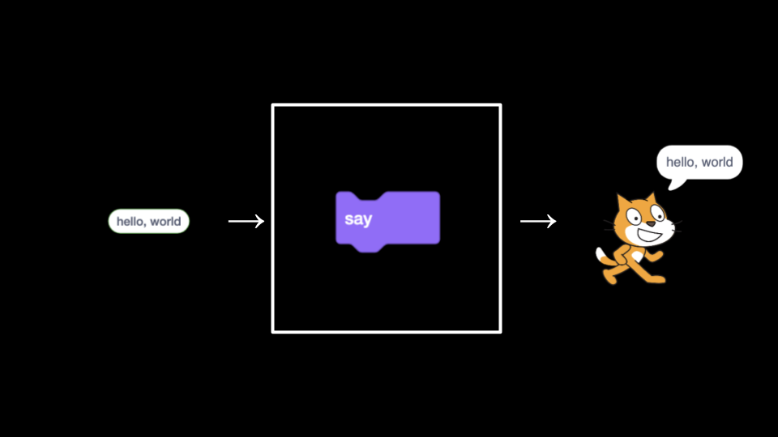

Week 0
Ciência da Computação. Pensamento Computacional. Resolução de Problemas: Entradas, Saídas. Representação: Unário, Binário, Decimal, ASCII, Unicode, RGB. Abstração. Algoritmos. Tempos de Execução. Pseudocódigo. Scratch: Funções, Argumentos, Valores de Retorno; Variáveis; Expressões Booleanas, Condicional; Loops; Eventos; Threads.
Notas
- Bem-vindo!
- O que vem por aí
- Comunidade!
- Pensamento Computacional
- Texto
- Emojis
- RGB
- Imagens, Vídeo e Som
- Algoritmos
- Pseudocódigo e os Blocos Básicos de Programação
- Scratch
- Abstração
- Se
- Expandindo sua Imaginação
- Movimento do Sprite
- Mais Sprites
- Resumindo
Bem-vindo!
- Esta aula trata de mais do que apenas programação de computadores!
- Na verdade, esta aula trata de resolução de problemas de uma maneira extremamente capacitadora! Você provavelmente aplicará imediatamente as habilidades de resolução de problemas que aprender aqui em seu trabalho além deste curso e até mesmo em sua carreira como um todo!
- No entanto, não será fácil! Você estará "bebendo da mangueira de conhecimento" durante este curso. Você ficará surpreso com o que será capaz de realizar nas próximas semanas.
- Este curso é muito mais sobre você avançar "você" de "onde você está hoje" do que atingir algum padrão imaginado.
- A consideração mais importante ao iniciar este curso: dê o tempo necessário para aprender por meio deste curso. Todo mundo aprende de maneira diferente. Se algo não funcionar bem no início, saiba que com o tempo você irá crescer e se desenvolver em suas habilidades.
O que vem por aí
- Esta semana você aprenderá sobre o Scratch, uma linguagem de programação visual.
-
Nas próximas semanas, você aprenderá sobre C. Isso será algo parecido com isso:
int main(void) { printf("hello, world\n"); } - À medida que as semanas avançam, você aprenderá sobre algoritmos.
- Você aprenderá sobre memória.
- Você aprenderá sobre códigos com bugs e o que causa falhas em computadores.
- Você aprenderá sobre estruturas de dados, como uma tabela de hash.
-
Então, faremos a transição para uma nova linguagem de programação de mais alto nível chamada Python. Seu código ficará assim:
print("hello, world") - Esta aula lhe dará uma compreensão sólida de como as linguagens de programação recentes se desenvolveram a partir das mais antigas.
- Também veremos como podemos usar bancos de dados e estruturas de terceiros para construir aplicativos da web.
Comunidade!
- Você faz parte da seleta comunidade de pessoas que estão fazendo o CS50, seja no Harvard College, Harvard Extension School, via edX.org, ou aqui no CS50-MCZ.
- Puzzle Day e a Feira CS50.
Pensamento Computacional
-
Essencialmente, programação de computadores consiste em pegar uma entrada e criar uma saída - assim resolvendo um problema. O que acontece entre a entrada e a saída, o que poderíamos chamar de uma caixa preta, é o foco deste curso.

- Por exemplo, podemos precisar fazer a chamada de presença para uma aula. Poderíamos usar um sistema chamado de unário para contar, um dedo de cada vez. Os computadores de hoje contam usando um sistema chamado de binário. É do termo dígito binário que obtemos um termo familiar chamado de bit. Um bit é um zero ou um.
- Os computadores só falam em termos de zeros e uns. Zeros representam desligado. Uns representam ligado. Os computadores são milhões, e talvez bilhões, de transistores que estão sendo ligados e desligados.
- Se você imaginar usar uma lâmpada, uma única lâmpada só pode contar de zero a um.
- No entanto, se você tiver três lâmpadas, há mais opções disponíveis!
-
Usando três lâmpadas, o seguinte poderia representar zero:
0 0 0 -
Da mesma forma, o seguinte representaria um:
0 0 1 -
Por essa lógica, poderíamos propor que o seguinte seja igual a dois:
0 1 0 -
Estendendo ainda mais essa lógica, o seguinte representa três:
0 1 1 -
Quatro apareceria como:
1 0 0 -
Nós poderíamos, na verdade, usando apenas três lâmpadas contar tão alto quanto sete!
1 1 1 -
Como heurística, poderíamos imaginar que os seguintes valores representam cada possível posição em nosso dígito binário:
4 2 1 -
Os computadores usam a 'base-2' para contar. Isso pode ser representado da seguinte forma:
2^2 2^1 2^0 4 2 1 -
Portanto, poderíamos dizer que seriam necessários três bits (o lugar dos quatro, o lugar dos dois e o lugar dos um) para representar um número tão alto quanto sete.
- Os computadores geralmente usam oito bits para representar um número. Por exemplo,
00000101é o número 5 em binário.
Texto
- Assim como os números são padrões binários de uns e zeros, as letras também são representadas usando uns e zeros!
- Como há uma sobreposição entre os uns e zeros que representam números e letras, o padrão ASCII foi criado para mapear letras específicas para números específicos.
- Por exemplo, a letra
Afoi decidido ser mapeada para o número 65. -
Se você recebeu uma mensagem de texto, o binário sob essa mensagem pode representar os números 72, 73 e 33. Mapeando-os para ASCII, sua mensagem ficaria assim:
H I ! 72 73 33 - Graças a padrões como o ASCII que nos permitem concordar com esses valores!
-
Aqui está um mapa expandido de valores ASCII:

- Se desejar, você pode aprender mais sobre ASCII.
Emojis
- À medida que o tempo passou, há mais e mais maneiras de se comunicar por texto.
- Como não havia dígitos suficientes em binário para representar todos os vários caracteres que poderiam ser representados por seres humanos, o padrão Unicode expandiu o número de bits que podem ser transmitidos e entendidos por computadores.
-
Há emojis que você provavelmente usa todos os dias. Os seguintes podem lhe parecer familiares:

- Os cientistas da computação enfrentaram um desafio ao querer atribuir vários tons de pele para cada emoji para permitir que a comunicação seja ainda mais personalizada. Nesse caso, os criadores e contribuintes de emojis decidiram que os bits iniciais seriam a estrutura do próprio emoji, seguido pelo tom de pele.
- Cada vez mais recursos estão sendo adicionados ao padrão Unicode para representar mais caracteres e emojis.
- Se desejar, você pode aprender mais sobre Unicode.
- Se desejar, você pode aprender mais sobre emojis.
RGB
-
Vermelho, verde e azul (chamados de
RGB) é uma combinação de três números.
-
Pegando os números 72, 73 e 33, usados anteriormente, que disseram
HI!via texto, seria interpretado pelos leitores de imagem como um tom claro de amarelo. O valor de vermelho seria 72, o valor de verde seria 73 e o de azul seria 33.
Imagens, Vídeo e Áudio
- As imagens são simplesmente coleções de valores RGB.
- Os vídeos são sequências de muitas imagens que são armazenadas juntas, assim como um livro de ilustrações.
- A música pode ser representada através de dados MIDI.
Algoritmos
- A solução de problemas é central para a ciência da computação e a programação de computadores.
- Imagine o problema básico de tentar localizar um único nome em uma lista telefônica.
- Como você poderia abordar isso?
- Uma abordagem poderia ser simplesmente ler da página um para a próxima e assim por diante até chegar à última página.
- Outra abordagem poderia ser procurar duas páginas de cada vez.
- Uma abordagem final e talvez melhor seria ir para o meio da lista telefônica e perguntar: "O nome que estou procurando está à esquerda ou à direita?" Então, repita esse processo, cortando o problema ao meio, cada vez pela metade.
-
Cada uma dessas abordagens poderia ser chamada de algoritmos. A velocidade de cada um desses algoritmos pode ser visualizada da seguinte forma, no que é chamado de notação big-O:

Observe que o primeiro algoritmo, destacado em vermelho, tem um big-O de
nporque se houver 100 nomes na lista telefônica, poderá levar até 100 tentativas para encontrar o nome correto. O segundo algoritmo, onde duas páginas foram pesquisadas de uma vez, tem um big-O de "n / 2" porque pesquisamos duas vezes mais rápido através das páginas. O algoritmo final tem um big-O de log2n, pois dobrar o problema resultaria em apenas um passo a mais para resolver o problema.
Pseudocódigo e os blocos básicos de programação
- A habilidade de criar pseudocódigo é fundamental para o sucesso tanto nesta aula quanto na programação de computadores.
-
O pseudocódigo é uma versão legível pelo ser humano do seu código. Por exemplo, considerando o terceiro algoritmo acima, poderíamos compor pseudocódigo da seguinte maneira:
1 Pegue a lista telefônica 2 Abra a lista telefônica no meio 3 Olhe a página 4 Se a pessoa estiver na página 5 Ligue para a pessoa 6 Se não, se a pessoa estiver antes na lista 7 Abra no meio da metade esquerda da lista 8 Volte para a linha 3 9 Se não, se a pessoa estiver depois na lista 10 Abra no meio da metade direita da lista 11 Volte para a linha 3 12 Se não, 13 Saia - Pseudocodificar é uma habilidade tão importante por pelo menos duas razões. Primeiro, quando você faz um pseudocódigo antes de criar um código formal, permite que você pense na lógica do seu problema com antecedência. Segundo, quando você faz um pseudocódigo, você pode fornecer essas informações mais tarde para outras pessoas que estão tentando entender suas decisões de codificação e como seu código funciona.
- Observe que a linguagem dentro de nosso pseudocódigo tem algumas características únicas. Primeiro, algumas dessas linhas começam com verbos como "pegar", "abrir", "olhar para". Mais tarde, chamaremos essas de funções.
- Em segundo lugar, observe que algumas linhas incluem declarações como
se (if)oucaso contrário (else if).Esses são chamados de condicionais. - Em terceiro lugar, observe como existem expressões que podem ser declaradas como verdadeiras ou falsas, como "a pessoa está antes no lista". Chamamos essas de expressões booleanas.
- Finalmente, observe como há declarações como "volte para a linha 3". Chamamos essas de loops.
- No contexto do Scratch, que é discutido abaixo, usaremos cada um dos blocos básicos de construção da programação acima mencionados.
Scratch
- Scratch é uma linguagem de programação visual desenvolvida pelo MIT.
- O Scratch utiliza os mesmos blocos de construção essenciais de programação que foram abordados anteriormente nesta palestra.
- O Scratch é uma ótima maneira de entrar na programação de computadores, pois permite que você brinque com esses blocos de construção de maneira visual, sem precisar se preocupar com a sintaxe de chaves curvas, pontos e vírgulas, parênteses e coisas do tipo.
-
O
IDE(ambiente de desenvolvimento integrado) do Scratch parece com o seguinte:
Observe que à esquerda existem blocos de construção que você pode usar em sua programação. À direita dos blocos de construção, há a área na qual você pode arrastar blocos para construir um programa. À direita disso, você vê o palco onde um gato está. O palco é onde sua programação ganha vida.
-
O Scratch opera em um sistema de coordenadas da seguinte forma:

Observe que o centro do palco está na coordenada (0,0). Agora, a posição do gato está na mesma posição.
-
Para começar, arraste o bloco "when green flag is clicked" para a área de programação. Em seguida, arraste o bloco
saypara a área de programação e anexe-o ao bloco anterior.Observe que quando você clica na bandeira verde agora, no palco, o gato diz "hello, world".
-
Isto ilustra muito bem o que discutimos anteriormente sobre programação:

Observe que a entrada
hello, worldé passada para a funçãosay, e o efeito da execução dessa função é o gato dizerhello, world. -
Podemos tornar seu programa mais interativo fazendo com que o gato diga
hellopara alguém específico. Modifique seu programa como abaixo: -
Podemos tornar seu programa mais interativo fazendo com que o gato diga "olá" para alguém específico. Modifique seu programa como abaixo:

Observe que quando se clica na bandeira verde, a função
aské executada. O programa solicita ao usuário que insira o seu nome,What's your name?Ele então armazena esse nome na variável chamadaanswer. Em seguida, o programa passaanswerpara uma função especial chamadajoin, que combina duas strings de texto,helloe o nome fornecido. Essas duas strings coletivamente são passadas para a funçãosay. O gato diz,Hello,e o nome. O seu programa agora é interativo. -
De maneira bastante similar, podemos modificar o nosso programa da seguinte maneira:

Observe que este programa, quando o botão verde é clicado, passa a mesma variável, concatenada com
hello, para uma função chamadaspeak.
Abstração
- Junto com a pseudocodificação, a abstração é uma habilidade e conceito essencial dentro da programação de computadores.
- A abstração é o ato de simplificar um problema em problemas menores e menores.
- Por exemplo, se você estivesse hospedando um jantar enorme para seus amigos, o problema de ter que cozinhar toda a refeição pode ser bastante avassalador! No entanto, se você dividir a tarefa de cozinhar a refeição em tarefas (ou problemas) menores e menores, a grande tarefa de criar essa deliciosa refeição pode parecer menos desafiadora.
-
Na programação, e até mesmo dentro do Scratch, podemos ver a abstração em ação. Na sua área de programação, programe como segue:
Observe que você está fazendo a mesma coisa várias vezes. Na verdade, se você se pegar codificando repetidamente as mesmas instruções, é provável que você possa programar de forma mais habilidosa - abstraindo esse código repetitivo.
-
Você pode modificar seu código da seguinte maneira:
Observe que o loop faz exatamente o que o programa anterior fazia. No entanto, o problema é simplificado, abstraindo a repetição em um bloco que repete o código para nós.
-
Podemos avançar ainda mais usando o bloco
define, em que você pode criar seu próprio bloco (sua própria função)! Escreva o código da seguinte maneira:Observe que estamos definindo nosso próprio bloco chamado
meow. A função reproduz o sommeow, em seguida, aguarda um segundo. Abaixo, você pode ver que quando a bandeira verde é clicada, nossa função de miado é repetida três vezes. -
Inclusive, podemos fornecer uma maneira pela qual a função possa receber uma entrada
ne repetir um número de vezes:Observe como
né passado de "miar n vezes".né passado para a função meow por meio do blocodefine. - Aliás, podemos chamar o gato de
sprite- um termo geral usado em programação de jogos para um objeto ou personagem na tela com o qual o jogador irá interagir.
If
- Condicionais são um bloco de construção essencial da programação, onde o programa procura ver se uma condição específica foi atendida. Se uma condição for atendida, o programa faz algo.
-
Para ilustrar uma condicional, escreva o código da seguinte forma:
Observe que o bloco
foreveré utilizado de forma que o blocoifseja acionado repetidamente, para que possa verificar continuamente se o gato está tocando o ponteiro do mouse. -
Podemos modificar nosso programa da seguinte maneira para integrar a detecção de vídeo:
- Lembre-se de que a programação muitas vezes é um processo de tentativa e erro. Se você ficar frustrado, reserve um tempo para refletir sobre o problema em questão. Qual é o problema específico que você está trabalhando agora? O que está funcionando? O que não está funcionando?
Expandindo Sua Imaginação
- Nesta palestra, mostramos a vocês vários programas do Scratch para estimular sua imaginação.
- Oscartime é um dos próprios programas do Scratch de David - embora a música possa assombrá-lo por causa do número de horas que ele ouviu enquanto criava este programa. Reserve alguns momentos para jogar o jogo você mesmo.
-
Construindo o Oscartime nós mesmos, primeiro adicionamos o poste de luz.

-
Em seguida, escrevemos o seguinte código:
Observe que mover o mouse sobre Oscar muda seu traje. Você pode aprender mais explorando esses blocos de código.
-
Então, modifique o seu código como a seguir para criar um pedaço de lixo caindo:
Observe que a posição do lixo no eixo y sempre começa em 180. A posição x é aleatória. Enquanto o lixo está acima do chão, ele desce 3 pixels por vez. Você pode aprender mais explorando esses blocos de código.
-
Em seguida, modifique o seu código como a seguir para permitir a possibilidade de arrastar o lixo.
Você pode aprender mais explorando esses blocos de código.
-
Em seguida, podemos implementar as variáveis de pontuação da seguinte forma:
Você pode aprender mais explorando esses blocos de código..
Movimento do Sprite
- Saindo do Oscartime para o jogo mais difícil de Ivy, agora podemos imaginar como implementar o movimento em nosso programa.
- Nosso programa possui três componentes principais.
-
Primeiro, escreva o código da seguinte forma:
Observe que quando a bandeira verde é clicada, nosso sprite se move para o centro do palco nas coordenadas (0,0) e depois fica ouvindo o teclado e verificando as paredes para sempre.
-
Segundo, adicione esse segundo grupo de blocos de código:
Observe como criamos um script personalizado
listen for keyboard. Para cada uma das teclas de seta do teclado, o sprite se move ao redor da tela. -
Finalmente, adicione este grupo de blocos de código:
Observe como também temos um script personalizado
feel for walls. Quando um sprite toca em uma parede, ele é movido de volta para uma posição segura - impedindo-o de sair da tela. - Você pode aprender mais explorando esses blocos de código.
- Experimente o jogo completo Oscartime.
Mais Sprites
- O Scratch permite que muitos sprites estejam na tela ao mesmo tempo.
-
Adicionando outro sprite, adicione os seguintes blocos de código ao seu programa:
Observe como o sprite de Yale parece atrapalhar o sprite de Harvard, movendo-se para frente e para trás. Quando bate em uma parede, ele se vira até bater na parede novamente. Você pode aprender mais explorando esses blocos de código.
-
Você pode até fazer um sprite seguir outro sprite. Adicionando outro sprite, adicione os seguintes blocos de código ao seu programa:
Observe como o logotipo do MIT agora parece seguir o sprite de Harvard. Você pode aprender mais explorando esses blocos de código.
- Vá experimentar o jogo completo Ivy's Hardest Game.
Resumindo
Nesta lição, você aprendeu como este curso se insere no vasto mundo da ciência da computação e programação. Você aprendeu...
- Que poucos alunos vêm para esta aula com experiência prévia em codificação!
- Que você não está sozinho! Você faz parte de uma comunidade.
- Que a solução de problemas é a essência do trabalho dos cientistas da computação.
- Que este curso não é apenas sobre programação - este curso irá apresentá-lo a uma nova forma de aprendizagem que você pode aplicar em quase todas as áreas da vida.
- Como números, texto, imagens, música e vídeo são entendidos pelos computadores.
- A habilidade fundamental de programação de pseudocodificação.
- Como a abstração desempenhará um papel em seu futuro trabalho neste curso.
- Os blocos básicos de construção da programação, incluindo funções, condicionais, loops e variáveis.
- Como construir um projeto no Scratch.
Até a próxima!